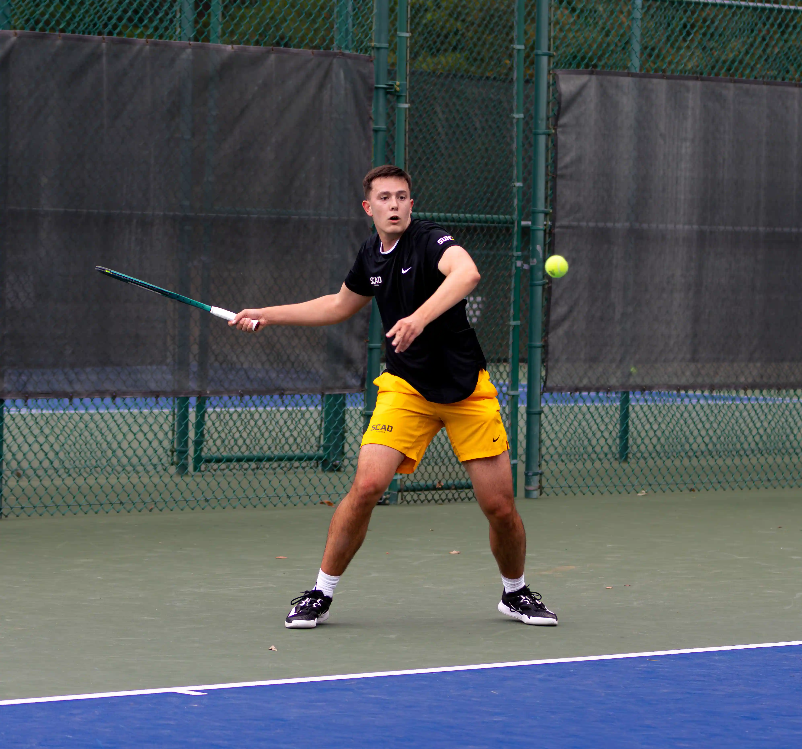

Designer · Contio
CarsonO'Hara
I design and build products.
Now playing
Read the case study
Contio
Brand, website and launch films for an AI meeting platform
Box score
| Project | Year | Role | Length | Team | Status |
|---|---|---|---|---|---|
| Contio | 2026–now | Brand + marketing | Ongoing | 1 of 2 designers | Live |
| Coral Keepers | 2026 | Design + front-end | 20 weeks | 5-person capstone | Live |
| FINRA x SCADpro | Winter 2026 | Research + prototype | 10 weeks | SCADpro team | Handed off |
| Big Bus Savannah | Fall 2025 | UX design + research | 10 weeks | 4-person team | Concept |
| Mose | Winter 2025 | UX research + design | 10 weeks | Class team | Concept |